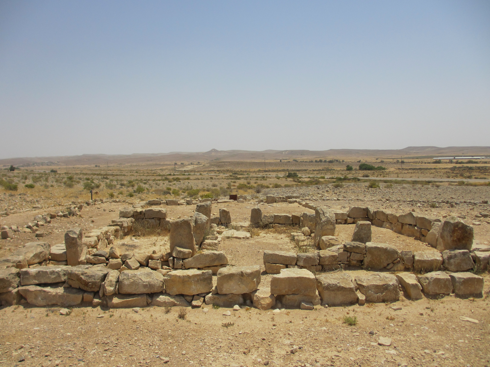
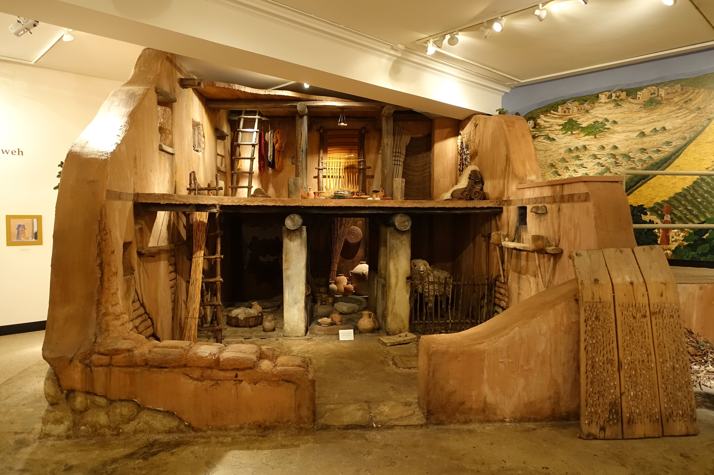

Si no hubo un éxodo masivo ni una conquista relámpago, ¿de dónde salieron los israelitas? La respuesta de la arqueología es sorprendente —y cierra el círculo de esta serie—.
Hemos recorrido siete grandes relatos, desde la creación hasta la caída de Jericó. En casi todos, el patrón se repetía: la ciencia y la arqueología no confirman la lectura literal, pero iluminan el origen y el sentido del relato. Toca la pregunta que lo reúne todo: si los grandes eventos fundacionales no ocurrieron como se cuentan, entonces ¿cómo nació realmente Israel? Y aquí la arqueología no se limita a decir "no": ofrece una respuesta propia, positiva y fascinante.
Las prospecciones arqueológicas de las tierras altas centrales de Canaán —la región que sería el corazón de Israel y Judá— han revelado un fenómeno nítido. Hacia el 1200 a.C., al inicio de la Edad del Hierro, aparecen de pronto cientos de pequeñas aldeas nuevas en las colinas, en zonas antes casi despobladas. No grandes ciudades conquistadas, sino un enjambre de asentamientos agrícolas modestos. Es la huella material del nacimiento de un pueblo.

Estas aldeas comparten rasgos: la casa de cuatro espacios (un patio con habitaciones alrededor), silos para grano, cisternas, terrazas de cultivo, y una cerámica sencilla y sin decoración. Es la cultura material de campesinos y pastores, no de un ejército invasor.
Hacia el 1200 a.C. surgieron de golpe cientos de pequeñas aldeas en las colinas de Canaán. Ese enjambre de asentamientos agrícolas —no una conquista militar— es el verdadero nacimiento arqueológico de Israel.
¿Quiénes eran estos aldeanos? Aquí la arqueología encontró una pista inesperada en los huesos de los desperdicios. En estas aldeas de las tierras altas falta casi por completo algo que sí abunda en los yacimientos vecinos (filisteos y cananeos de la llanura): los huesos de cerdo. Mientras los filisteos comían cerdo con frecuencia, estos montañeses no lo criában ni lo comían.
Es el rasgo cultural distintivo más antiguo que podemos rastrear de este grupo —siglos antes de que se escribieran las leyes bíblicas sobre alimentos—. No sabemos con certeza por qué evitaban el cerdo, pero el patrón es claro: esta gente marcaba una identidad propia, se distinguía de sus vecinos. Estaban construyendo, literalmente en su mesa, la frontera de un "nosotros".
Y aquí llega la conclusión que da la vuelta al relato tradicional. Cuando los arqueólogos estudian la cerámica, la arquitectura y las costumbres de estas aldeas, no encuentran los rastros de un pueblo llegado de fuera —de Egipto o del desierto—. Encuentran, al contrario, una continuidad con la cultura cananea previa: la cerámica de las tierras altas deriva de la cerámica cananea anterior; no hay una ruptura brusca como la que dejaría una invasión.

La lectura mayoritaria, formulada sobre todo por Israel Finkelstein, es que los primeros israelitas fueron, en su gran mayoría, cananeos indígenas: gente local —campesinos desplazados, pastores nómadas, población de las ciudades en declive— que, tras el colapso de las ciudades-estado cananeas a finales de la Edad del Bronce, se trasladó a las colinas y formó una nueva sociedad. Israel no llegó a Canaán desde fuera: Israel surgió de dentro de Canaán.
Esta conclusión ata todos los cabos de la serie. Explica por qué no hay rastro del éxodo masivo (no vinieron de Egipto en masa), por qué no hay una conquista militar destructora (no invadieron desde fuera), y por qué Jericó y otras ciudades no encajan con el relato bélico (no hubo tal campaña). El origen de Israel no fue una irrupción desde el desierto, sino una transformación interna de la sociedad cananea: un pueblo nuevo que se forjó en las colinas y, con el tiempo, contó sobre sí mismo relatos de patriarcas migrantes, esclavitud y liberación, y conquista heroica, para darse una identidad y un origen compartido.
Y aquí conviene cerrar como abrimos: esto no destruye el valor de los relatos. Los mitos de origen no son mentiras; son la forma en que los pueblos se explican a sí mismos. Que Israel surgiera de Canaán y no del Sinaí no resta un ápice de fuerza al mensaje de liberación del Éxodo, ni de sabiduría a las historias del Génesis. Simplemente nos permite leerlos por lo que son: no crónicas periodísticas, sino la gran obra de memoria, identidad y fe con que un pequeño pueblo de las colinas de Canaán se explicó el mundo —y terminó cambiando la historia de la humanidad—.
De la creación a las colinas de Canaán, cada relato resultó ser menos una crónica y más un espejo: el modo en que un pueblo se contó a sí mismo quién era.
Poner la Biblia a prueba no la vacía. La devuelve a su tiempo, a su tierra y a su gente.
El modelo del surgimiento interno de Israel a partir de la población cananea es la síntesis de Israel Finkelstein y Neil A. Silberman en The Bible Unearthed (2001), apoyada en las prospecciones de las tierras altas desde 1967. La aparición de cientos de aldeas del Hierro I, la casa de cuatro espacios y la continuidad cerámica con lo cananeo son datos ampliamente aceptados.
La ausencia de huesos de cerdo como marcador identitario la han estudiado Finkelstein y, con matices críticos, Avraham Faust y Brian Hesse; algunos advierten que no debe sobreinterpretarse como prueba étnica única. La identificación exacta de estos aldeanos como "israelitas" en sentido pleno es objeto de matices (Dever y Finkelstein difieren en detalles), pero la continuidad cananea es consenso.
La serie ha buscado, en cada entrega, separar el dato (lo que la evidencia establece) de la interpretación y de la fe (que no son competencia de la arqueología). Su propósito no ha sido negar creencias, sino iluminar el origen histórico y literario de unos relatos que han marcado a la civilización.